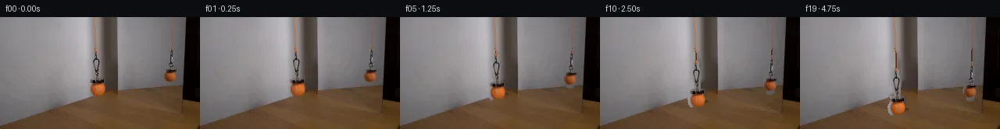

![首帧]()

Round 00
2026-11-05T03:38:04.132724+00:00像素候选变化代码 +212/−0inspection 更新
pixels 792b71920702bb29 · code 164cef4c5b69b69c
查看本轮 generate.py 真实 diff
--- previous/generate.py +++ current/generate.py @@ -0,0 +1,212 @@ +#!/usr/bin/env python3 +"""Generate a 20-frame locked-camera sequence by local source-pixel compositing.""" + +from pathlib import Path + +import cv2 +import numpy as np +from PIL import Image, ImageDraw + +from artifact_io import save + + +ROOT = Path(__file__).resolve().parent +H, W = 144, 256 + + +def ellipse(mask, center, axes, value=255): + cv2.ellipse(mask, center, axes, 0, 0, 360, value, -1, cv2.LINE_AA) + + +def make_regions(): + """Broad, overlapping regions enclosing only the two moving assemblies.""" + real = np.zeros((H, W), np.uint8) + # Thin connector and loop. + cv2.line(real, (122, 45), (123, 57), 255, 5, cv2.LINE_AA) + ellipse(real, (123, 61), (5, 10)) + cv2.line(real, (124, 68), (124, 82), 255, 5, cv2.LINE_AA) + # Magnet casing and the foreground ball. + cv2.rectangle(real, (115, 78), (135, 89), 255, -1) + ellipse(real, (125, 93), (12, 12)) + + refl = np.zeros((H, W), np.uint8) + cv2.line(refl, (220, 40), (219, 51), 255, 5, cv2.LINE_AA) + ellipse(refl, (219, 55), (4, 9)) + cv2.line(refl, (219, 62), (218, 69), 255, 5, cv2.LINE_AA) + cv2.rectangle(refl, (210, 66), (226, 74), 255, -1) + ellipse(refl, (217, 76), (10, 10)) + return real, refl + + +def clean_plate(source, real_region, refl_region): + """Locally remove the two assemblies while leaving cords above them untouched.""" + erase = np.maximum(real_region, refl_region) + # Inpainting works well here because both vacated areas are small regions of + # smooth wall/mirror or low-frequency tabletop grain. + plate = cv2.inpaint(source, (erase > 0).astype(np.uint8) * 255, 4.0, cv2.INPAINT_TELEA) + return plate + + +def source_layer(source, plate, region): + """Return premultiplied source RGB and alpha inferred from the clean plate.""" + difference = np.max(np.abs(source.astype(np.int16) - plate.astype(np.int16)), axis=2) + # Object cores are opaque. At antialiased boundaries, difference supplies a + # soft coverage estimate without introducing a rectangular crop edge. + alpha = np.clip((difference.astype(np.float32) - 1.5) / 6.0, 0.0, 1.0) + alpha *= region.astype(np.float32) / 255.0 + # Retain tiny dark hook pixels whose local contrast is small. + alpha = np.where((region > 0) & (difference >= 5), 1.0, alpha) + premul = source.astype(np.float32) * alpha[..., None] + return premul, alpha + + +def translate(array, dy, interpolation=cv2.INTER_LINEAR): + matrix = np.float32([[1.0, 0.0, 0.0], [0.0, 1.0, float(dy)]]) + return cv2.warpAffine( + array, + matrix, + (W, H), + flags=interpolation, + borderMode=cv2.BORDER_CONSTANT, + borderValue=0, + ) + + +def composite_premul(canvas, premul, alpha, dy): + moved_rgb = translate(premul, dy) + moved_alpha = translate(alpha, dy) + return canvas * (1.0 - moved_alpha[..., None]) + moved_rgb + + +def add_extended_cord(canvas, which, dy): + """Extend the existing fixed cord to the newly lowered connector top.""" + overlay = canvas.copy() + if which == "real": + # Sampled from the orange/brown real cord near its lower fixed section. + color = (116, 55, 18) + x, y0, y1 = 122, 43, int(np.floor(48 + dy)) … diff truncated; 125 more lines …